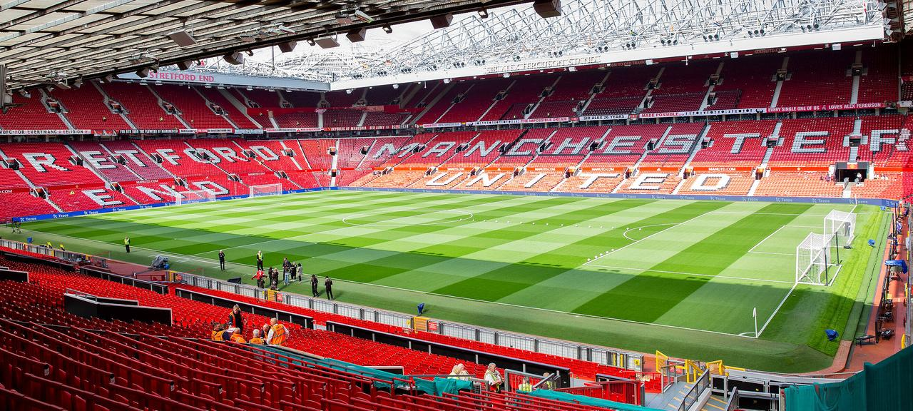
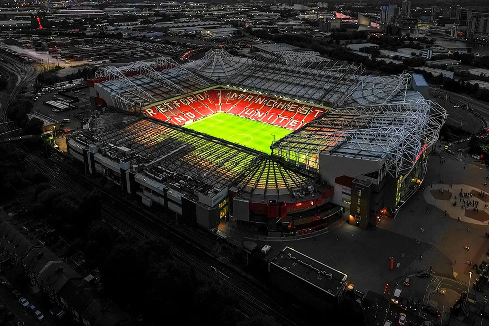

Old Trafford




Stadium Information
Capacity
74.310
Location
Greater Manchester, England
Playing Area
105 m × 68 m
Age
Est. 1910
Iconic Venue with Rich History
Old Trafford, the historic home of Manchester United, is an iconic football stadium with a rich history. It has witnessed countless memorable moments and historic matches, creating a unique atmosphere for fans.
Notable Features
Old Trafford is adorned with distinctive features, including the "Theatre of Dreams" sign, the Munich Memorial, and the Sir Matt Busby Statue. These elements contribute to the stadium's unique charm and significance.
Historic Moments
Throughout its history, Old Trafford has been a witness to numerous historic moments. From legendary players gracing the pitch to unforgettable triumphs in domestic and international competitions, the stadium stands as a symbol of Manchester United's success.